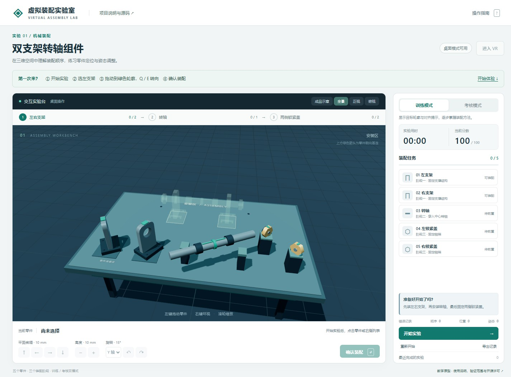

在机械装配实验室里，把转轴拖到正确位置，再按“确认装配”，也可能收到“工序不符合”的提示。画面看起来接近，规则却还没通过。
这个小原型把一次装配拆成三个彼此独立、可解释的问题：前面的依赖零件装好了吗？中心距离还差多少？旋转朝向对齐了吗？

先检查顺序，再看空间
两个支架属于第一阶段，可以交换先后；转轴要等两个支架都装好；两侧锁紧盖都依赖转轴。规则记录的是有向依赖关系，不是一条必须逐项照抄的唯一线性顺序。
左支架 ─┐ ┌─ 左锁紧盖
├─ 转轴完成 ──┤
右支架 ─┘ └─ 右锁紧盖“先装左支架”和“先装右支架”都可以成立。如果把同一阶段硬写成唯一顺序，系统就会把合理操作误判成错误。
位置和姿态各有一把尺子
位置误差是零件中心到目标中心的欧氏距离；姿态误差是相对目标旋转四元数的夹角。当前教学阈值设为位置 55 mm、角度 12°，两个条件都需要满足。
这组数字是为了让桌面鼠标拖动容易完成，不代表真实机械加工公差。系统不计算接触力、刚体碰撞或螺纹啮合；拖到目标附近后吸附，表达的是教学规则里的“允许放置”。
一次失败，应该给出一个清楚的下一步
判定按固定优先级依次检查工序、位置、姿态。多个条件同时不满足时，只先报告当前最前面的阻碍；修正后再继续尝试，让每次提示都能对应一个具体动作。
| 反馈类型 | 意味着什么 | 对应动作 |
|---|---|---|
| 工序错误 | 前置依赖零件尚未完成 | 先安装左右支架或中心转轴 |
| 位置偏差 | 零件中心距目标超过阈值 | 平移零件或微调高度 |
| 姿态偏差 | 旋转夹角尚未进入容差范围 | 切换旋转轴并调整朝向 |
重复确认已安装零件、训练尚未开始或异常程序输入也有各自独立分支；无效程序输入不会当作操作者失误扣分。
把规则从三维画面里拆出来
domain.mjs 专门负责工序依赖、位姿误差、状态流转与计分，Three.js 只负责三维渲染与控件交互。这样可以用合成坐标与四元数直接测试边界，而不必每次在三维视图里凭手感拖动。
当前公开版本包含 29 项自动测试，覆盖正常训练、错误提示、JSON 结果导出、重置、考核提示隐藏与本机历史清除；尚未开展真实头显舒适度或真人教学效果实验。
试一次“有解释的失败”
- 点击开始训练，直接选中转轴并尝试确认装配，观察工序依赖提示。
- 装好左右支架后，把转轴移到目标附近但故意转偏角度，区分位置偏差与姿态偏差。
- 切换到考核模式重走一轮，导出 JSON 查看每次提交的误差记录。
本项目由课程原型独立整理公开，开发、文档与测试使用了 AI 辅助；预设规则得分不构成现实技能认证。